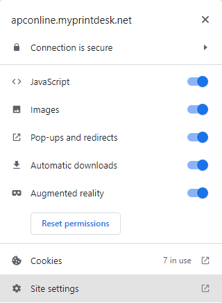
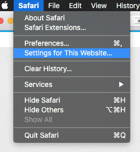

How To Access the Password Reset Link Window:
The reason the password email link is not working is because ALL of the top web browsers (Google Chrome, Firefox, Apple's Safari, Microsoft Edge) inspect the security of websites you visit and block elements from sites that are deemed either insecure or have mixed security.
Our print portal is classified as a "Mixed Security" site by all of the browsers. This means pages you access have links in the code to the back-end of our site and production systems using various communication protocols. These links are files, scripts, and calls which enable elements of our portal to function or communicate with our production facility. Although these files, scripts, and calls cannot be accessed by a user, web browser still enforce their security protocols by default.
To fix this you have to adjust security in your browser at the site level. By doing go, you will gain full functionality of our print portal, including pop-up windows, file uploads, and some design features. Follow the steps for your browser (below) to adjust your browser settings:
- On your computer, open Chrome.
- Go to a website.
- To the left of the web address, an icon showing the security status of the site is displayed. It's one of these 3:

Click the icon and the following window/menu will appear:

- Click Site settings.
- Change the following permission settings:
- Pop-ups and redirects: ALLOW
- Insecure content: ALLOW
Tip: Your changes save automatically.
The Firefox Page Info window gives you technical details about the page you're on and also allows you to change various permissions for that website. To open the Page Info window, use one of these methods:
• If the Menu bar is enabled, in the Menu bar, click "Tools" and select "Page Info" from the drop-down menu.
• Use the keyboard shortcut "Ctrl + I".
The Page Info window that opens is organized into different panels.

Permissions
The Permissions panel lets you override options for the domain/website address listed after Permissions for:
Uncheck the Use Default box to specify whether the page is allowed or blocked from doing the indicated action.
• Open Pop-up Windows should be ALLOWED

Customize the active website
- In the Safari app, choose Safari > Settings for This Website.
 - It is here you can choose the options you want for a specific website:
- UNCHECK:Enable Content Blockers
- ALLOW:Pop-up Windows

How to set permissions per website on Microsoft Edge
- Click the Lock icon next to the website link in the address bar.

- Click the Site permissions option.
- Use the drop-down menus to allow or deny permissions
- ALLOW: Javascript
- ALLOW: Images
- ALLOW: Pop-ups and redirects
- ALLOW: Automatic downloads
- ALLOW: Insecure Content